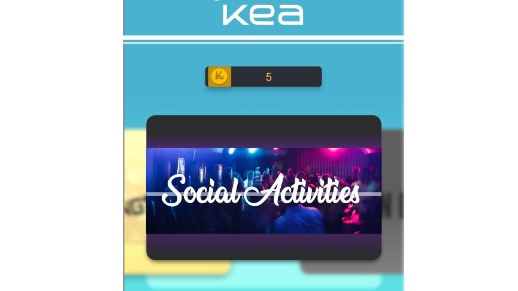
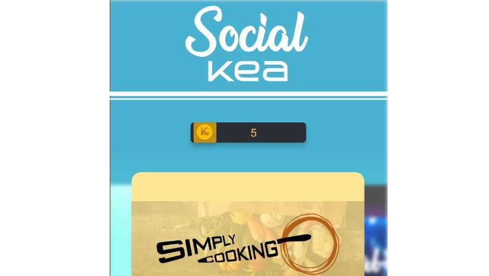
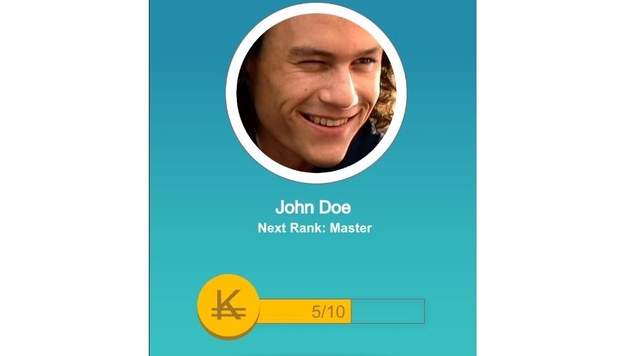

04.04.01 - Design Sprint: Native App
Se den fulde opgave her
I dette tema lærte vi hvordan vi identificerede og efterkom brugerbehov. Vi lærte at teste webløsninger – andres, såvel som vores egne. Vi lærte hvordan man lavede en brugertest og hvordan vi fik mest muligt ud af testresultaterne. Vi blev introduceret til Adobe XD, som er et værktøj vi brugte til at lave prototyper til webløsninger, som vi senere i forløbet ville færdiggøre vha. grafisk design i Indesign og med kodning i HTML, CSS og Javascript. Til sidst i temaet udarbejdede vi en temadokumentation, som havde til formål at overskueliggøre arbejdet igennem de enkelte opgaver.
I denne opgave gik vi i gang med at lave en Adobe XD prototype til en mobil-app. Vi lavede en app der hedder KEA-social. Vi startede med at lave et design sprint, som vi havde gjort i 04.02.01 – design sprint. Ideen var at lave en app der skulle informere en KEA-studerende om aktiviteter og priser udenfor undervisningen.

VI valgte at gøre appen underholdende, ved at give muligheden for at vinde og eller spare penge på ting i KEAs kantine og moonbar. Derudover fungerede det som en form for ”loyalty app” som belønnede den studerende for at købe i kantinen og i moonbaren og dermed optjene ”KEA-coins”, som kunne indløses ved senere køb på KEA.

Til sidst kunne brugeren også stige i rang og dermed opgradere deres ”Social-card”, som gav yderligere rabatter og tilbud. Håbet var at appen skulle motivere brugeren til at bruge penge på KEA og ikke købe mad og drikkevarer udenfor KEA. Opgaven mundede ud i en fremlæggelse, hvor vi pitchede ideen.
